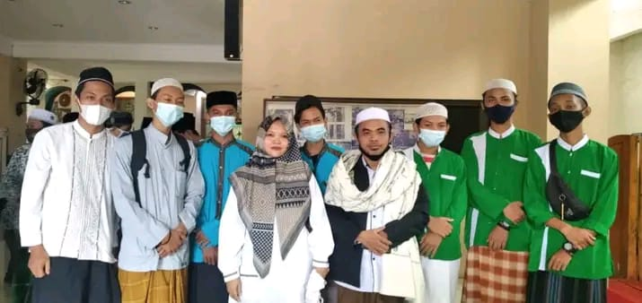
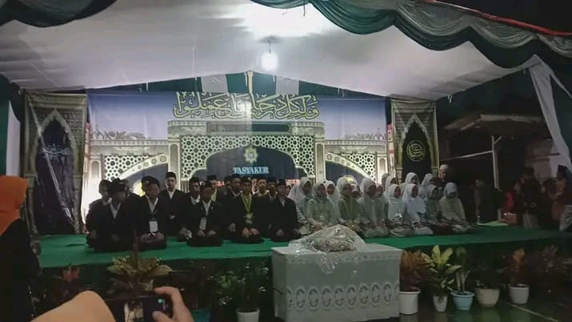
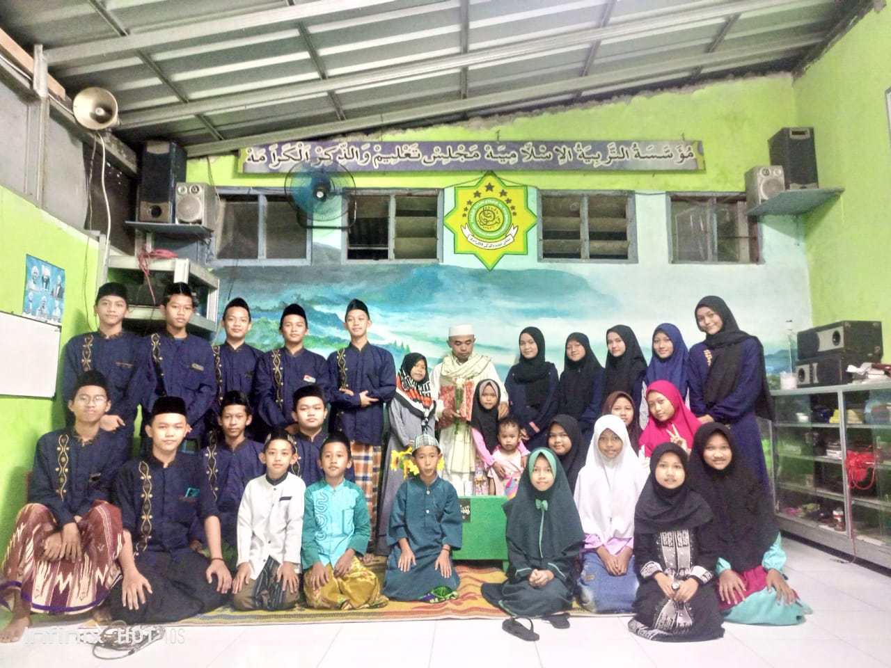

IRMAS AL-HIDAYAH
Kontak Kami
IRMAS AL-HIDAYAH
Telpon : 0838-9887-1869
Email : adeliaanggraeni586@gmail.com
Alamat : Perum. VGH 5 Blok J, Ds. Satria Mekar, Kec. Tambun Utara, Kab. Bekasi
Hubungi Kami
KEGIATAN KAMI



